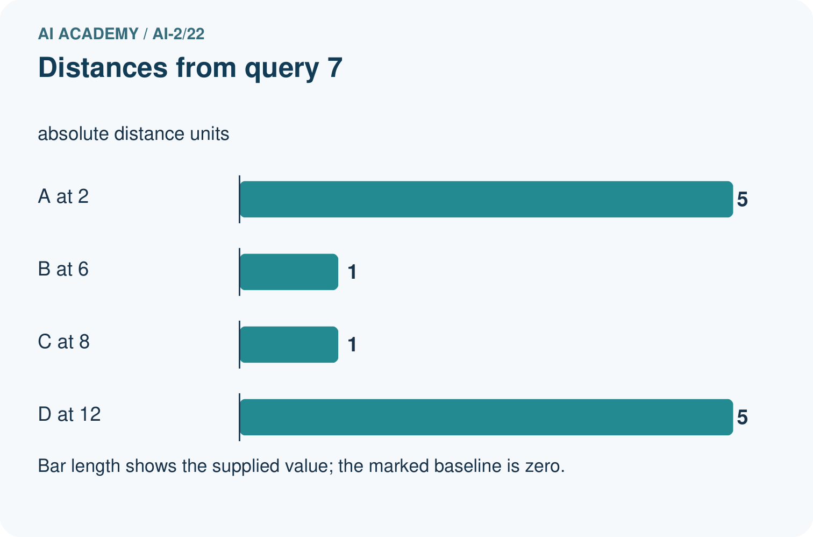
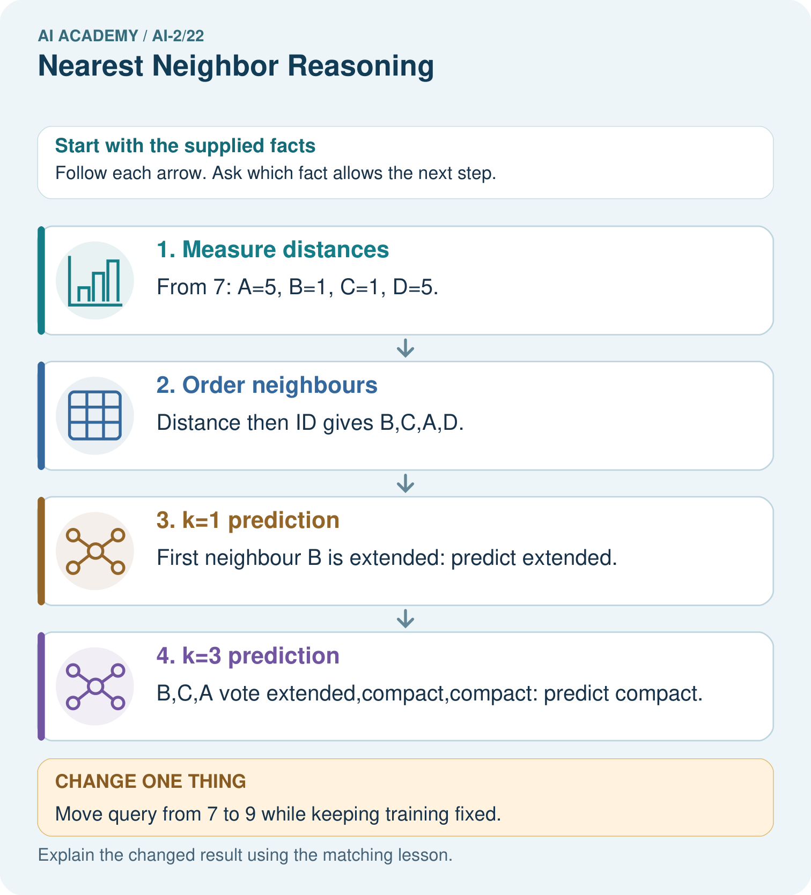
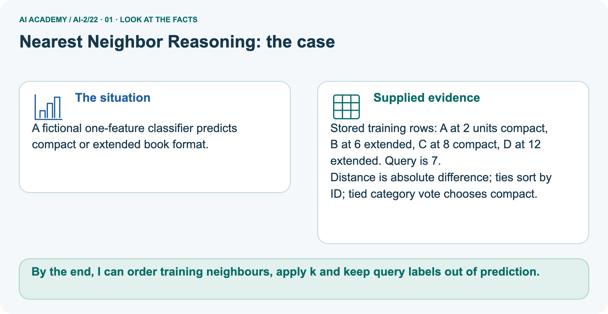
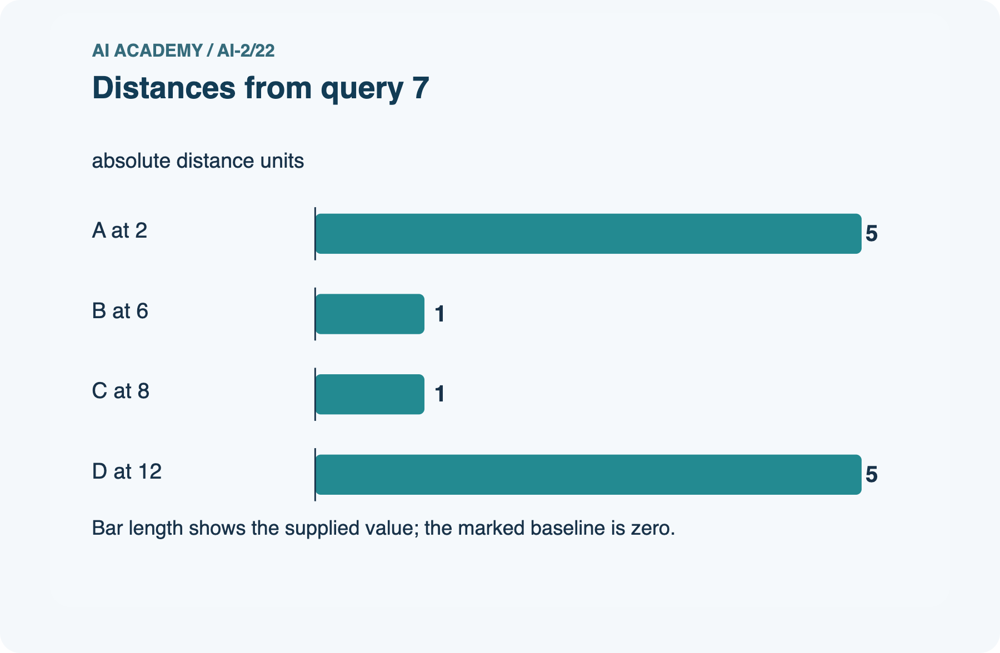
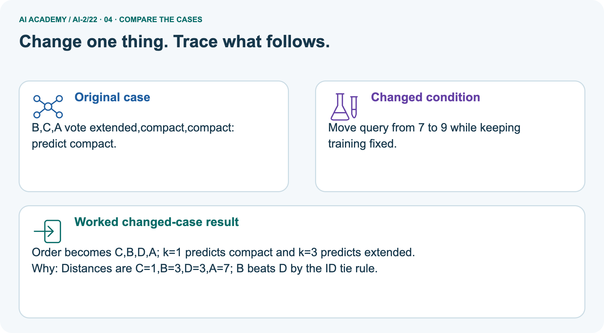
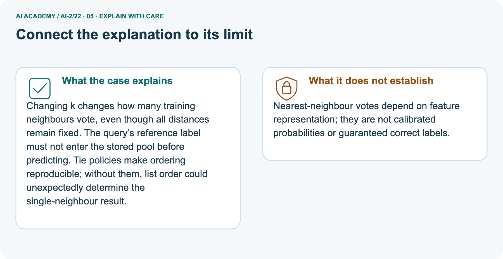
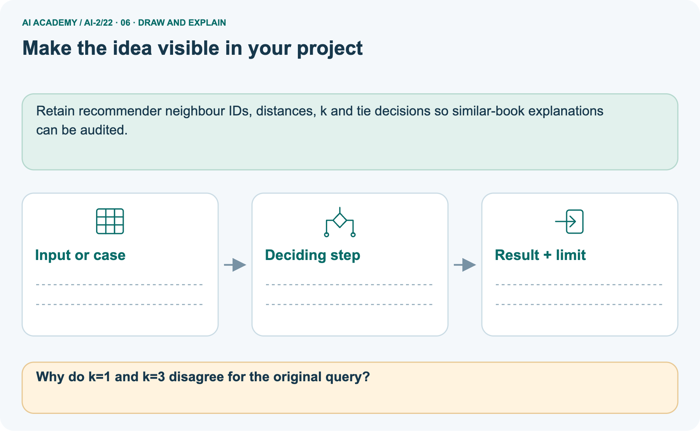

AI Academy · Level 2 · Grade 7 · Week 22 · Workbook
Nearest Neighbor Reasoning
Learn to understand, design, build, test and explain AI systems responsibly.
Project: Transparent Book Recommender
Workbook · 1 of 21
Recall and choose your starting point
Record your starting explanation for Nearest Neighbor Reasoning before opening notes. Show any later correction separately.
Try the recall before opening notes. Then use a different colour or a labelled second line to correct your explanation.
Similarity by Selected Traits
Without opening the old lesson, explain one key idea from Similarity by Selected Traits. Give an example and a mistake that the idea helps you avoid.
Sampling and Representation
Without opening the old lesson, explain one key idea from Sampling and Representation. Give an example and a mistake that the idea helps you avoid.
Overfitting Intuition
Without opening the old lesson, explain one key idea from Overfitting Intuition. Give an example and a mistake that the idea helps you avoid.
Workbook · 2 of 21
Practise with fading help
Complete the supported Nearest Neighbor Reasoning trace and record the first step you can explain without help.
Use W2: Apply neighbour and tie rules for Nearest neighbours and distances. Record the answer once; the lesson and workbook refer to the same attempt.
| Given inputs | Procedure I chose | Middle steps | Result and check |
|---|---|---|---|
Workbook · 3 of 21
Individual reasoning check
Check the proposed Nearest Neighbor Reasoning explanation against the supplied facts before discussing it.
Use the worked case for Nearest neighbours and distances. Proposed explanation: “A negative difference is a negative distance”. Decide whether this explanation is supported.
Point to the step or supplied fact that decides; explain your repair if needed.
Workbook · 4 of 21
Independent transfer case
Write one first attempt at the reserved independent case before feedback. Repeated copies of that case refer to the same recorded attempt.
Independent case: Find neighbours independently
New training rows are P at 1 cm clear, Q at 5 blocked, R at 7 blocked, S at 11 clear, T at 13 blocked. For query 6, give all distances, order the IDs by distance then alphabetically, and predict with k=1 and k=3.
Using the same training pool and k=3, score validation (6,blocked),(10,clear),(12,blocked). Compare the training-majority baseline.
Attempt this case before feedback. Record any help. Earlier examples below are further practice; a case already practised with feedback cannot establish fresh transfer.
Workbook · 5 of 21
Your learning target
Connect the Nearest Neighbor Reasoning target to a trace and a justified conclusion.
A query has nearest books A and B at distance 1, with conflicting labels; C is distance 2. A program chooses whichever row occurs first. Explain the risk and define a reproducible alternative.
Workbook · 6 of 21
Solve the given case
Solve the supplied Nearest Neighbor Reasoning case and show the deciding evidence.
A=[1,1] liked, B=[1,0] disliked, C=[0,0] disliked; query=[0,1].
Find nearest neighbours using differing-trait distance and k=1.
Show your trace, calculation or evidence
Workbook · 7 of 21
Check a changed case
Apply the procedure to the changed case and record why the conclusion follows.
Training items have one numeric feature: A=2 with label short, B=8 with label long. A new item has value 6. Use absolute distance to choose its nearest neighbour.
My independent answer and reason
Week 22 Test and reflect
Workbook · 8 of 21
Design a revealing test
Specify a changed input, expected result and observation separately.
Create a changed input, boundary case or missing-information case. Write the expected answer or safe response before testing.
| Test record | My evidence |
|---|---|
| Changed input or condition | |
| Expected answer or fallback | |
| Observed result | |
| Why the result occurred |
Workbook · 9 of 21
Project checkpoint
Justify what Nearest Neighbor Reasoning adds to Transparent Book Recommender and keep the evidence.
Use neighboring liked books as evidence, while explaining which traits created closeness.
The project change and evidence I will keep
Workbook · 10 of 21
Self check
Judge explanation, evidence, transfer and limits separately; attach the work behind your judgement.
- I can explain the mechanism.
- I can show evidence.
- I can handle a changed case.
- I can name a limit.
Mark each as not yet, with help or independently, and attach supporting work.
Teacher review ____________________ Next step ____________________
Workbook · 11 of 21
Transfer practice from the original programme
Use this earlier case as transfer practice. A case already discussed with feedback is not fresh assessment evidence.
A query has nearest books A and B at distance 1, with conflicting labels; C is distance 2. A program chooses whichever row occurs first. Explain the risk and define a reproducible alternative.
Record support used: none, hint or teacher explanation.
Workbook · 12 of 21
W1 Calculate feature distances
Calculate feature distances. Apply the supplied Nearest Neighbor Reasoning facts and keep your reasoning.
For query 3 cm, calculate distances to all five training rows. Explain why A and B tie even though their labels differ.
Workbook · 13 of 21
W2 Apply neighbour and tie rules
Apply neighbour and tie rules. Apply the supplied Nearest Neighbor Reasoning facts and keep your reasoning.
For query 3, list the selected IDs and predictions for k=1 and k=3 using alphabetical ID order on equal distances. Explain what changes and what remains the same.
Workbook · 14 of 21
W3 Keep evaluation examples separate
Keep evaluation examples separate. Apply the supplied Nearest Neighbor Reasoning facts and keep your reasoning.
Why must the three validation reference labels not enter the neighbour pool? Give the fixed k=3 score and baseline score on the worked validation examples.
Workbook · 15 of 21
W4 Find neighbours independently
Attempt before feedback. If this repeats the selected independent case, reuse that first attempt; otherwise keep a separate record. Find neighbours independently. Apply the supplied Nearest Neighbor Reasoning facts and keep your reasoning.
New training rows are P at 1 cm clear, Q at 5 blocked, R at 7 blocked, S at 11 clear, T at 13 blocked. For query 6, give all distances, order the IDs by distance then alphabetically, and predict with k=1 and k=3.
Using the same training pool and k=3, score validation (6,blocked),(10,clear),(12,blocked). Compare the training-majority baseline.
Workbook · 16 of 21
W5 Interpret a vote and a match
Interpret a vote and a match. Apply the supplied Nearest Neighbor Reasoning facts and keep your reasoning.
Two of three neighbours vote clear. Does that prove a two-thirds chance of a correct prediction? Does an exact feature match guarantee a correct label? Explain both limits.
Workbook · 17 of 21
Feedback, return check and learning record
Record the first repaired step and a different case to revisit after a delay.
| Evidence | My record |
|---|---|
| Worked alone / hint / model | |
| First step I repaired and why | |
| New case checked later; date and result | |
| What I can now explain without notes | |
| One remaining question |
Revisit this idea with your teacher after a delay. Familiarity is different from explaining and using it on a changed case.
Workbook · 18 of 21
Pictorial case practice: Nearest Neighbor Reasoning
A fictional one-feature classifier predicts compact or extended book format. Explain the labelled step before checking the changed condition.
A fictional one-feature classifier predicts compact or extended book format.
Stored training rows: A at 2 units compact, B at 6 extended, C at 8 compact, D at 12 extended. Query is 7.
Distance is absolute difference; ties sort by ID; tied category vote chooses compact.


Why do k=1 and k=3 disagree for the original query?
Record the help used
Support used: alone / hint / worked example. This record is practice evidence.
Project connection: Retain recommender neighbour IDs, distances, k and tie decisions so similar-book explanations can be audited.
Workbook · 19 of 21
Project portfolio milestone
Keep this week’s input, deciding step, result and limit together in the Transparent Book Recommender record.
Project: Transparent Book Recommender
Current milestone: Evaluate and revise. Compare with your starting method, explain errors and record a justified revision.
Retain recommender neighbour IDs, distances, k and tie decisions so similar-book explanations can be audited.
| Evidence to keep | My record |
|---|---|
| This week’s input and deciding step | |
| Prediction and actual result (or labelled paper trace) | |
| One change since the previous checkpoint and why | |
| One error or limit and the next test |
Workbook · 20 of 21
Supported practice and learning evidence
Try the supported questions before comparing with hints and feedback. Record what you repaired and the evidence you retained.
Use this supported practice once, in the browser or on paper. Keep the reserved independent assessment for a separate first attempt before teacher feedback.
A fictional one-feature classifier predicts compact or extended book format.
Practice 1: explain the deciding evidence
Which labelled step matches this detail? B,C,A vote extended,compact,compact: predict compact.
1. k=1 prediction
2. Order neighbours
3. k=3 prediction
4. Measure distances
Hint · try first
Hint if needed: Read the steps in the pictorial case. Match the supplied detail to the stage that performs or records it.
Feedback · compare after trying
After your attempt, compare with the supported explanation: k=3 prediction B,C,A vote extended,compact,compact: predict compact. Changing k changes how many training neighbours vote, even though all distances remain fixed.
The query’s reference label must not enter the stored pool before predicting. Tie policies make ordering reproducible; without them, list order could unexpectedly determine the single-neighbour result.
Practice 2: explain the deciding evidence
Changed case · predict first
Changed-case practice: Move query from 7 to 9 while keeping training fixed. Which conclusion is supported by the supplied facts?
1. This one example guarantees correct results for every future input.
2. We can decide the result without examining the changed input or the procedure.
3. Order becomes C,B,D,A; k=1 predicts compact and k=3 predicts extended.
Hint · try first
Hint if needed: Use the changed condition and the deciding step in the pictorial trace. The answer must say what follows from those facts.
Feedback · compare after trying
After your attempt, compare with the supported explanation: Order becomes C,B,D,A; k=1 predicts compact and k=3 predicts extended. Distances are C=1,B=3,D=3,A=7; B beats D by the ID tie rule.
Repair a missing building block
Review Similarity by Selected Traits (ai-2/21). Goal: Represent items with numeric features. Short practice: Explain why B ceases to be a closest option without any candidate data changing..
Return to this week and explain what you changed.
Review Sampling and Representation (ai-2/19). Goal: Define a question and target population. Short practice: Can 80% response be reported as 80% of the whole grade responding?. Return to this week and explain what you changed.
Review Overfitting Intuition (ai-2/16). Goal: Compare training and validation evidence for model capacity. Short practice: Does zero training error justify choosing Complex in the original record?.
Return to this week and explain what you changed.
Predict, run and debug
The browser lab lets you edit the supported Python examples already included in this lesson. Predict first, run, inspect the actual output or error, change one input, then run again.
Keep code, predictions, actual results and a reasoned revision together. On paper, label your result as a trace rather than an execution.
Keep your completed work
Use Download completed work in the hosted lesson to export your answers, reflections, practice feedback and code-run evidence. Open the HTML copy to read or print it.
Drafts stay in this browser when storage is available; clear drafts on a shared device.
Workbook · 21 of 21
Visual concept journey
Explain each Nearest Neighbor Reasoning picture from its labels, then record a relevant limit.
01. Nearest Neighbor Reasoning: the case

A fictional one-feature classifier predicts compact or extended book format. Supplied facts: Stored training rows: A at 2 units compact, B at 6 extended, C at 8 compact, D at 12 extended. Query is 7.
Distance is absolute difference; ties sort by ID; tied category vote chooses compact.
Point to the given fact that matters most. Explain why it matters.
02. Follow the deciding steps

Measure distances: From 7: A=5, B=1, C=1, D=5. → Order neighbours: Distance then ID gives B,C,A,D. → k=1 prediction: First neighbour B is extended: predict extended. → k=3 prediction: B,C,A vote extended,compact,compact: predict compact.
Point to each numbered stage and explain which recorded input it uses.
03. Distances from query 7

Distances from query 7. Units: absolute distance units. A at 2: 5. B at 6: 1. C at 8: 1. D at 12: 5.
Read the labels and values. Explain the relationship the model shows.
04. Change one thing. Trace what follows.

Original case: B,C,A vote extended,compact,compact: predict compact. Changed condition: Move query from 7 to 9 while keeping training fixed.
Expected result: Order becomes C,B,D,A; k=1 predicts compact and k=3 predicts extended. Reason: Distances are C=1,B=3,D=3,A=7; B beats D by the ID tie rule.
Predict before checking the worked changed-case result. Name what changed and what the supplied facts allow you to conclude.
05. Connect the explanation to its limit

Changing k changes how many training neighbours vote, even though all distances remain fixed. The query’s reference label must not enter the stored pool before predicting.
Tie policies make ordering reproducible; without them, list order could unexpectedly determine the single-neighbour result.
Limit: Nearest-neighbour votes depend on feature representation; they are not calibrated probabilities or guaranteed correct labels.
Explain the case, then point to a limit on the claim.
06. Make the idea visible in your project

Retain recommender neighbour IDs, distances, k and tie decisions so similar-book explanations can be audited. Draw your input, deciding step, result and limit.
Supported question: Why do k=1 and k=3 disagree for the original query?
Draw your project trace and justify the deciding step using evidence.